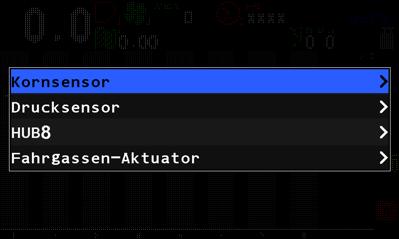

Gerätekonfiguration – vor dem Beginn
Was die Gerätekonfiguration ist, welche Vorbereitung sie braucht und nach welchem Muster aus drei Punkten jedes Konfigurationsmenü aufgebaut ist.
Bei der Inbetriebnahme eines Systems oder beim Austausch eines Sensors muss jedes neue Gerät seine Adresse erhalten – die Nummer, unter der das Panel es im Sensornetz findet. Das geschieht unter „Service“ → „Sensorkonfiguration“, jeweils für ein Gerät.
Vorbereitung
Trennen Sie alle Sensoren vom Netzanschluss des Panels.
Schließen Sie nur das eine Gerät an, das eine neue Adresse erhalten soll.
Schalten Sie das Panel ein. Es erscheinen Alarme über verlorene Kommunikation – schließen Sie sie alle (So arbeiten die Alarme).
Heben Sie die Zugriffsebene auf „Agronom“ an – siehe Agronomen-Ebene aktivieren.
Drücken Sie „BACK“ und wählen Sie dann „Service“ → „Sensorkonfiguration“. Das Menü bietet vier Geräteklassen an.

Das Menü „Sensorkonfiguration“.
Das Muster
Alle vier Menüs funktionieren gleich:
| Punkt | Was er ist |
|---|---|
| „Sensoradresse“ / „Geräteadresse“ | Mit welchem Gerät das Menü spricht. Lassen Sie ihn auf „AUTO“, dann spricht das Panel mit dem einzigen Gerät, das antwortet. „MENU“ bei diesem Punkt startet eine Suche; jeder weitere Druck springt zum nächsten gefundenen Gerät. |
| „Neue Adresse“ | Die Adresse, die das Gerät annehmen soll. Stellen Sie sie mit „PLUS“ / „MINUS“ ein. |
| „Einstellen“ | Schreibt sie. „Fertig“ bedeutet, dass das Gerät sie übernommen hat. |
Danach, jedes Mal: Trennen Sie das Gerät und schließen Sie es wieder an, kehren Sie zum Startbildschirm zurück und prüfen Sie, dass es dort erscheint, wo es soll. Stellen Sie dann die Ebene wieder auf „Fahrer“ – oder schalten Sie das Panel aus und wieder ein, was dasselbe bewirkt.
Die Geräte
| Gerät | Thema |
|---|---|
| Kornsensor | Kornsensor konfigurieren |
| Drucksensor | Drucksensor konfigurieren |
| Eingangsmodul HUB8 | HUB8 konfigurieren |
| Controller des Fahrgassen-Aktuators | Controller des Fahrgassen-Aktuators konfigurieren |
| Elektromotor-Controller – mit eigenem Zugang | Motorcontroller konfigurieren |
Ihre Maschine tut etwas, das diese Seite nicht beantwortet? Schreiben Sie an support@agriwelt.com — es antwortet ein Ingenieur.